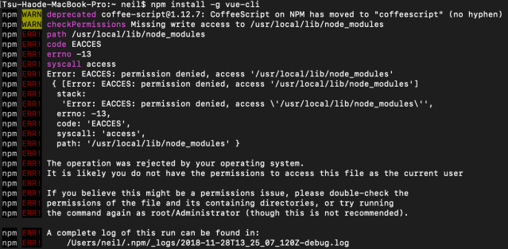
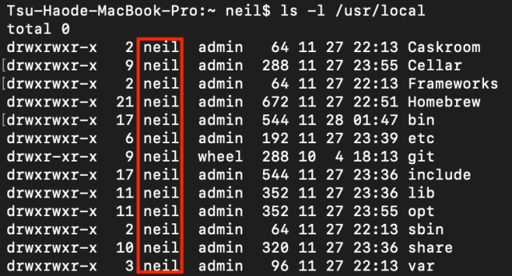

【npm】解決安裝權限不足
npm 全域安裝提示權限不足的錯誤
npm WARN checkPermissions Missing write access to /user/local/lib/node_modules

解決方法
修改 npm 所安裝目錄的權限
1 | sudo chown -R $USER /usr/local |
會要求輸入密碼，登入密碼
查看目錄是否已經切換權限
1 | ls -l /usr/local |

紅色區域本來會是 root ，切換權限後會變為自己主機的名稱
- Post title：【npm】解決安裝權限不足
- Post author：Neil Yang
- Create time：2019-06-14 00:00:00
- Post link：https://des86532.github.io/2019/06/14/Npm/npm-install/
- Copyright Notice：All articles in this blog are licensed under BY-NC-SA unless stating additionally.